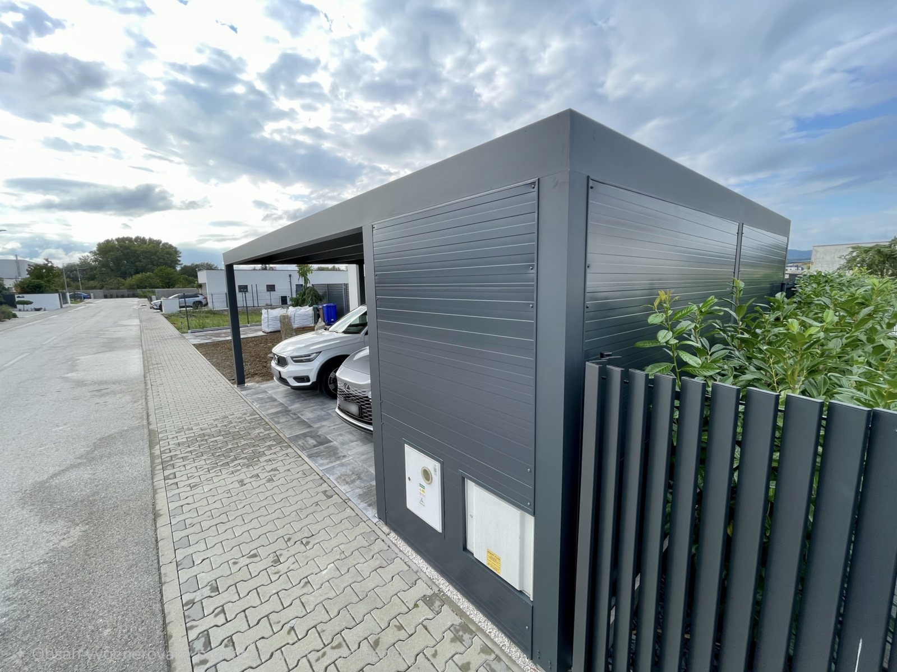

SL 1701 auto
Úspornejší pôdorys pre jedno auto
Jedno kryté státie bez zbytočnej šírky navyše.
- Max. šírka
- 3,14 m
- Dĺžka · 4 stĺpy
- do 6,0 m
- Dĺžka · 6 stĺpov
- do 8,0 m
- Využitie
- jedno státie

Prémiová rada Soltec: nosná konštrukcia aj strecha z hliníka, integrované odvodnenie v stĺpe a výplne podľa toho, čo má carport uzavrieť.
SL 170 alebo SL 240
SL 170 je pre jedno auto. SL 240 je pre dve autá. Oba používajú 30 mm ISO panel s viditeľným 1,5 % spádom; voda odchádza integrovaným odvodnením v stĺpoch. Rad SL je jednoduchší systém: katalóg pri ňom uvádza LED a samostatný úložný box.
Vyskúšať v konfigurátoreJedno kryté státie bez zbytočnej šírky navyše.
Dve vozidlá vedľa seba alebo viac voľného priestoru.
Z čoho je to postavené
Soltec skladá konštrukciu podľa zvoleného radu. F má vodorovný rám s integrovaným 2 % spádom a širší katalóg doplnkov; SL má priznaný 1,5 % spád a užší výber. Doplnky preto treba zaradiť už do návrhu a potvrdiť ich kompatibilitu.
Prejsť na nezáväznú ponuku
Profil
Nosné profily 170 a 240 mm, stĺpy 120 alebo 150 mm. Rady F a SL sa líšia tvarom aj rozponom.
Profil
170 / 240 mm
Najväčší rozmer
6 × 9,2 m

Strecha
Strechu radu SL tvorí 3 cm ISO panel s viditeľným 1,5 % spádom smerom k integrovanému odvodneniu. Presnú skladbu a odtoky potvrdíme pri návrhu.
ISO panel
30 mm
Spád
viditeľný 1,5 %

Doplnky
Pri rade SL katalóg uvádza LED osvetlenie a samostatný uzamykateľný box. Ďalšie prvky nepreberáme automaticky z radu F — vhodnosť potvrdíme v návrhu.
Box
samostatný doplnok
Svetlo
LED v profile
Čo je v cene
Box v zostave
Box je pod tou istou strechou, s vlastnými dverami a rovnakým obkladom. Z ulice je to jeden objekt.

Šírka podľa carportu, pri SL 170 do 3,14 m. Dĺžka závisí od polohy sekundárnych nosníkov.
Hĺbka
1,2 – 3 m
Plocha
3,8 – 9,4 m²

Vzadu, vľavo alebo vpravo od státia. Integrované jednokrídlové dvere so zámkom, obklad z hliníka, dreva alebo drevodekoru.
Dvere
so zámkom
Obklad
hliník, drevo, dekor
Samostatne stojaci alebo kotvený k stene, s napojením na garáž či vstup do domu. Vývody vody sú skryté v stĺpoch.
Previs
do 1,3 m pri SL
Kotvenie
voľné aj k stene

Carport Soltec · Hliník
Celohliníkový rám a nerezové spojovacie prvky, vyrobené v EÚ. Voda odteká v stĺpoch, takže na prístrešku nie sú viditeľné odkvapy; ISO panel radu SL má viditeľný 1,5 % spád. Pod tou istou strechou môže stáť uzamykateľný box.
7 rokov
záruka na konštrukciu
10 rokov
záruka na ISO panely
Z našich montáží
Rovnaký systém v piatich rôznych zostavách.

SL 240 pre dve autá

Carport Soltec s otvoreným státím

Prístrešok so zadným boxom

SL240 s priznaným spádom

Realizácia v Nitre
Na stiahnutie
Katalógy sú od výrobcu Soltec, v pôvodnom jazyku. Čokoľvek z nich radi vysvetlíme po slovensky.
Časté otázky
Nenašli ste odpoveď? Zavolajte nám, poradíme aj bez záväzku.
+421 948 482 266Cenu určuje rad a typorozmer, počet stĺpov, odtieň a kompatibilné doplnky. Rad SL je jednoduchší systém s užším katalógovým výberom doplnkov než rad F; presnú cenu preto určujeme až pre konkrétnu zostavu. Napíšte nám rozmer a mesto: cenu pošleme do 24 hodín. Zameranie je zadarmo a doprava aj montáž sú v cene.
F má 2 % spád ISO panela integrovaný do vodorovného rámu a katalóg pri ňom uvádza LED, ZIP tienenie, panely a dekoratívne stĺpy. SL má viditeľný 1,5 % spád ISO panela; katalóg pri rade SL uvádza LED a samostatný úložný box. Dokumentácia nepotvrdzuje, že užší výber doplnkov spôsobuje samotný spád, preto kompatibilitu vždy overíme pre konkrétnu zostavu.
Áno, systém s tým počíta. Panely aj ich uchytenie riešime pri návrhu, aby vyhoveli zaťaženiu vo vašej lokalite.
SL 170 je určený pre jedno auto: šírka do 3,14 m, dĺžka do 6 m na štyroch stĺpoch alebo do 8 m na šiestich. SL 240 je určený pre dve autá: šírka do 6 m, dĺžka do 6 m na štyroch stĺpoch alebo do 8,5 m na šiestich. Box je samostatný doplnok. Porovnanie rozmerov je vyššie na tejto stránke.
Strecha radu SL má viditeľný 1,5 % spád smerom k integrovanému odvodneniu. Voda odchádza vývodmi v stĺpoch do pripraveného odtoku; presný počet a polohu odtokov určí konkrétna zostava.
Vonkajším kotvením do betónovej pätky; kotvenie sa dodáva pozinkované, na želanie lakované v odtieni konštrukcie alebo z nehrdzavejúcej ocele. Pätky vieme vykopať a vybetónovať ako doplnkovú službu.
Nemá čo. Celý rám je z hliníka a všetky štandardné spojovacie prvky z nehrdzavejúcej ocele. Povrch je práškový lak, ktorý sa nenatiera ani neošetruje.
Povoľovací režim závisí od rozmeru, umiestnenia a konkrétneho pozemku. Pred realizáciou si požiadavky potvrďte s príslušným stavebným úradom; pri návrhu vám vieme pripraviť rozmery a osadenie konštrukcie.
Pri návrhu. Poloha sekundárnych nosníkov sa kreslí podľa boxu, takže jedna montáž vyjde lacnejšie aj rýchlejšie. Prestavba hotového carportu je možná, ale diely chodia zo Slovinska a cena aj termín idú výrazne hore.
Cenová ponuka zadarmo
V konfigurátore si prejdite rozmer, strechu aj boky. Zostavu nám pošlite a ozveme sa s presnou ponukou.
Ozveme sa vám do 24 hodín. Ak sa dovtedy nikto neozve, radšej zavolajte — mohlo sa stať, že dopyt k nám nedošiel. Takto to bude pokračovať:
Fotky, ktoré ste vybrali, pošlite prosím e-mailom — formulár ich k nám neprenesie. Poslať fotky na obchod@koverta.sk
Súri to? +421 948 482 266 · obchod@koverta.sk
Server nám nevrátil odpoveď, takže nevieme povedať, či dopyt prešiel. Nečakajte na nás — ozvite sa priamo, vybavíme to hneď: